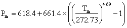

Ice VI substructure
Ice-six (ice VI) is formed from liquid water at 1.1 GPa by lowering its temperature to 270 K (see Phase Diagram). Its unit cell, which forms tetragonal crystals (P42/nmc, 137; Laue class symmetry 4/mmm) is analogous to edingtonite silica. In the crystal, all water molecules are hydrogen-bonded to four others, two as donor and two as acceptor.
Ice VI contains four-membered rings joined as tricyclo-hexamers a and has a density of 1.31 g cm−3 (at 0.6 GPa where water density = 1.18 g cm−3; the difference in density is only 0.03 g cm−3 at 81.6 °C and 2.15 GPa). There are two separate interpenetrating networks with no connecting hydrogen bond, with the resulting network resembling that of packed octahedra (each tricyclo-hexamer resembling a distorted octahedron). These octahedra are individually stable in vaccuo. Each network is linked together through the four equatorial water molecules in the hexamers. The two axial hexamer water molecules join the hexamers and experience a different molecular environment. These clusters share corners in the c direction (the 'a' molecules above right), and they are hydrogen-bonded to one another in the a and b directions (the 'b' molecules above right). The hydrogen-bonding is disordered and continually changing as in hexagonal ice. There are two distinct types of water molecule (labeled a (20%)and b (80%) and four distinct types of hydrogen bond labeled 1 (20%), 2 (40%), 3 (20%), and 4 (20%) [1003].
Ice vi crystal structure
The tetragonal crystal (shown opposite with the oxygen atoms shown either red or orange depending on network membership) has cell dimensions a, b = 6.1812 Å, c = 5.698 Å (90º, 90º, 90º; D2O, at 1.1 GPa and 225 K) and contains 10 water molecules [360], 4477]. One of the two independent networks has been given yellow oxygen atoms.
Ice-six has triple points with ice-two and ice-five (estimated at -55 °C, 620 MPa), liquid water and ice-five (-0.16 °C, 632.4 MPa), ice-seven and ice-eight (≈ 5 °C, 2.1 GPa) and liquid water and ice-seven (355 K, 2.216 GPa). The relative permittivity (dielectric constant) of ice-six is the greatest of all the water ices at about 193. The Gibbs energy representation for ice VI has been reported [3697].
Note that in this structural diagram the hydrogen-bonding is ordered. In contrast, in reality it is random (obeying the 'ice rules': two hydrogen atoms near each oxygen, one hydrogen atom on each O····O bond). This disorder gives rise to a zero-point entropy close to 3.504 J mol−1 K−1 [2153]. As the H-O-H angle does not vary much from that of the isolated molecule, the hydrogen bonds are not straight (although shown so in the figures).
The melting curve for ice-six is given by  MPa [1320] and its pressure-volume data has been described [2337 ]. The SeaFreeze package allows the computation of the thermodynamic (phase boundaries, density, entropy, specific heat, isothermal bulk modulus, adiabatic bulk modulus, thermal expansivity, chemical potentials) and elastic properties of ice VI over the 0-2300 MPa and 220-500K range [3832]. The near-infrared spectra of ice-six have been compared with that of hexagonal
ice [4189]. The refractive index of ice VI up to 2.21 GPa at room
temperature has been reported [4219].
It was predicted that ice-six forms a hydrogen bond ordered phase
(proposed as ice-fifteen) near 108 K [910] or 80 K [1003]. This ice XV (ice-fifteen) phase has recently been experimentally
proven below 130 K [1582]. HCl-doped
ice VI may produce deep glassy states [3453] as well as ice XV. It has further been established that partially ordered states may exist in a mixture of ordered domains within disordered ice VI [3252]. A second hydrogen-ordered phase for ice VI , proposed as ice XIX, has been demonstrated by neutron diffraction measurements [3987].
Using first-principles density functional theory to simulate the vibrational spectrum, the ice VI spectrum was compared to that of its hydrogen-ordered counterpart, ice XV [4299].
Interactive Jmol structures of ice VI and ice XV are given.
[Back to Top  ]
]
a These hexamer units are similar to the lowest potential energy forms of water hexamer clusters, (H2O)6 “cage-like” clusters, as found using molecular simulations. [Back]
Home | Site Index | Phase Diagram | Ices, introduction | Ice-Ih | Ice-Ic | Ice-Isd | II | III | IV | V | VII | VIII | IX | X | XI | XII | XIII | XIV | XV | XVI| XVII | XVIII | Amorphous ice | LSBU | Top
This page was established in 2002 and last updated by Martin Chaplin on 18 August, 2022